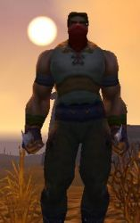

Lavki
Age : 18 ans
Sexe : Homme
Race : Humain
Faction : Alliance
Formation : Voleur
Description : Abandonné à sa naissance, il a longtemps erré dans les rues de Stormwind.
Jusqu'au jour où il fût recueilli à l'orphelinat de Stormwind, il decouvrit le metier de marchand et il en vie actuellement. Il apprit lui même les compètences de voleur. Il voyage actuellement à la recherche d'objets precieux et d'aventure. Rêvant de devenir un hero et de rencontrer les personnes dont il a tant entendu parler, il se balade souvent dans Stormwind espérant parfois croiser l'une d'elle et vivre une aventure formidable. Il a abandonné la recherche de ses parents à cause du manque d'indice...
Plus d'infos sur Lavki >>>Lire les 2 récits de Lavki >>>